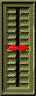
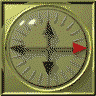
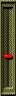

Compass and Zoom
Updated 28 Feb 2001
- QuArK Information Base
- 1. Introduction to QuArK
- 1.5. Map-editor in QuArK
|
|
Compass and Zoom
Updated 28 Feb 2001
|
Upper levels: - QuArK Information Base - 1. Introduction to QuArK - 1.5. Map-editor in QuArK |
|
1.5.7. Compass and Zoom |
[ - - ] |
|
Index |
|
Compass X-view-axis rotation |
Decker - 28 Feb 2001 | [ Top ] |
|
 Rotates the map-views. |
|
Compass Y-axis rotation |
Decker - 28 Feb 2001 | [ Top ] |
|
 Rotates the map-views. This is useful, if you use the classic map-layout, so you can see 'the other sides' of your map, without having to manually rotate the objects. |
|
Zoom |
Decker - 28 Feb 2001 | [ Top ] |
|
 Zooms the map-views. You can also use the mouse or keys to zoom with. See the 'Keys' options for these settings. |
|
Copyright (c) 2009, GNU General Public License by The QuArK (Quake Army Knife) Community - http://quark.sourceforge.net/ |
[ - Top - ] |